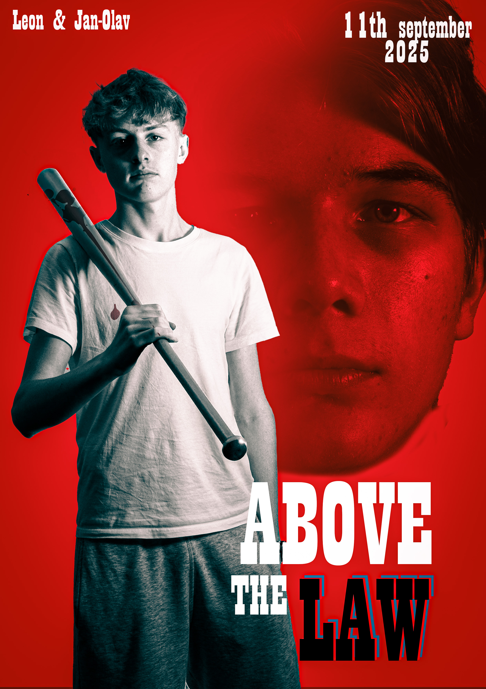

Om meg
Prosjekter
Hjem

Film plakat
Kort beskrivelse av prosjektet og teknologier brukt.
Portrett intervju
Kort beskrivelse av prosjektet og teknologier brukt.
Øve oppgaver
Kort beskrivelse av prosjektet og teknologier brukt.